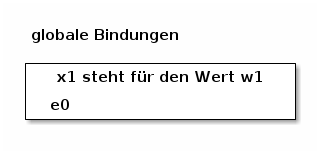
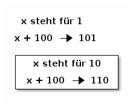
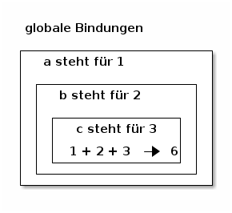

Sturkturiertere Tests¶
In diesem Kapitel schauen wir uns an, wie wir Tests besser strukturieren
können. Außerdem lernen wir die neue grammatikalische Form let <name> =
<expression> in <expression>.
Lokale Variablen¶
Wir haben schon gesehen, wie wir globale Variablen definieren:
let <name> = <expression> {and <name> = <expression>}*
Manches mal brauchen wir aber in einer Funktion Variablen, die wir nicht vorher
definieren können und die wir nach Abschluss der Funktion nie wieder benutzen
wollen. Dafür brauchen wir eine andere grammatikalische Variante des let.
let <name> = <expression> in <expression>
Für diesen Ausdruck gilt die folgende Typenregel:
G |- e1 : t1 (x1 : t1), G |- e0 : t0
LET ------------------------------------------
G |- let x1 = e1 in e0 : t0
In Worten:
- in einer beliebigen Typenumgebung
Ghat der Ausdrucklet x1 = e1 in e0den Typent0, wenn (1) in disere Umgebung der Ausdrucke1den Typent1hat und (2) der Ausdrucke0den Typent0hat, wenn die Umgebung erweitert wird mit der Bindung vonx1zum Typent1.
Außerdem:
Wenn wir den Ausdruck
let x1 = e1 in e0evaluieren, dann evaluieren wir zuerste1in der aktuellen Typenumgebung.Wenn die Evaluieren nicht terminiert, dann terminiert die Evaluierung von
let x1 = e1 in e0auch nicht.Wenn die Evaluierung einen Fehler hervorruft, ruft die Evaluierung von
let x1 = e1 in e0denselben Fehler hervor.Wenn
e1zum Wert w1 evaluiert wird, dann vereinfacht sich die Evaluierung vonlet x1 = e1 in e0dazu, dass wire0in einere Umgebung evaluieren, wo der Namex1den Wert w1 repräsentiert.Wir können das auch grafisch darstellen:
Die Bindung von
x1ist lokal. Das bedeutet, dass sie aus der Umgebung gelöscht wird sobald wire0evaluiert haben.
Wo ein toplevel Let-Ausdruck, let x = d den Namen x global bindet, bindet
ein Let-Ausdruck let x = d in e den Namen x nur lokal in der Evaluierung von
e.
Hier ein Beispiel:
# let x = 1;;
val x : int = 1
# x + 100;;
- : int = 101
# let x = 10 in x + 100;;
- : int = 110
# x;;
- : int = 1
#
Grafisch können wir das Ganze wie folg darstellen:
Wir können diese Let-Ausdrücke auch beliebig verschachteln:
# let a = 1 in let b = 2 in let c = 3 in a + b + c;;
- : int = 6
#
Wieder einmal ist die grafische Darstellung für das Verständnis hilfreicher:
Übung 34¶
Probiere selbst mit den lokalen und globalen Variablen herum. Definiere ein paar globale Variablen und schreibe hinterher ein paar Let-Ausdrücke, in die sowohl globale als auch lokale Variablen eingehen.
Spiele auch gerne mit dem Überschatten von globalen Bindungen durch lokale Bindungen herum, wie wir es im ersten Beispiel oben gesehen haben.
Let-Ausdrücke für Tests benutzen¶
Wir können nun unsere Tests übersichtlicher machen, indem wir jedem Teil des Tests
einen Namen zuweisen und hinterher alle Ergebnisse mit && zusammensetzen. Hier
als Beispiel ein verbesserter Test für die Nachfolger-Funktion:
let test_nachfolger_leserlich kandidat =
let b1 = (kandidat 0 = 1)
and b2 = (kandidat 4 = 5)
and b3 = (kandidat (-3) = (-2))
and b4 = (kandidat 17 = 18)
(* and etc. *)
in b1 && b2 && b3 && b4;;
Der Sinn dieses Umschreiben ist, dass das Hinzufügen neuer Testfälle um einiges praktischer wird.
Übung 35¶
- Schreibe die Testfunktion, die du für eine Verdreifachungsfunktion geschrieben hast, zu der neuen Form um (gerne als neue Funktion). Überprüfe, dass deine Verdreifachungs-Funktion den umgeschriebenen Test weiterhin besteht.
- Bonus: Um deinem inneren Positive Bias
entgegen zu wirken, überprüfe, dass die Funktion
verdoppeldeinen Test nicht besteht. - Gedankenfutter: Was passiert, wenn du eine der lokal definierten Variablen nicht in
dem Ausdruck nach dem
inbenutzt? Warum glaubst du, passiert das?
Zwischenspiel zum Gedankenfutter¶
Alfrothul: Das muss ich gleich ausprobieren. Also mit dem Beispiel vom Nachfolger-Test könnte das so aussehen:
# let test_nachfolger_leserlich kandidat =
let b1 = (kandidat 0 = 1)
and b2 = (kandidat 4 = 5)
and b3 = (kandidat (-3) = (-2))
and b4 = (kandidat 17 = 18)
(* and etc. *)
in b1 && b2 && b3;;
Warning 26 [unused-var]: unused variable b4.
val test_nachfolger_leserlich : (int -> int) -> bool = <fun>
#
Sigrid: Eine Warnung, dass du eine Variable nicht benutzt.
Alfrothul: Aber wie weiß OCaml denn, dass ich sie nicht später noch benutze.
Brynja: Ich glaube, das müsste was mit der lokalen Bindung zu tun haben.
Sigrid: Ja, das macht Sinn. Nachdem OCaml das in b1 && b2 && b3 evaluiert
hat, vergisst es doch die lokalen Bindungen wieder.
Alfrothul: Stimmt! Dann macht es Sinn, dass da eine Warnung ist.